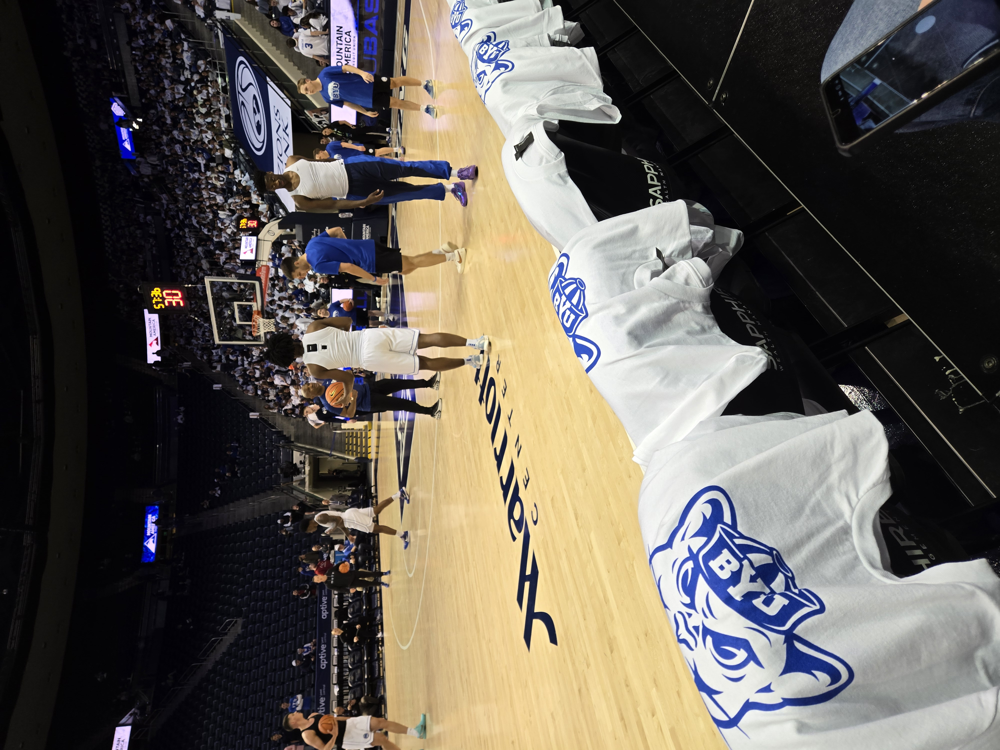
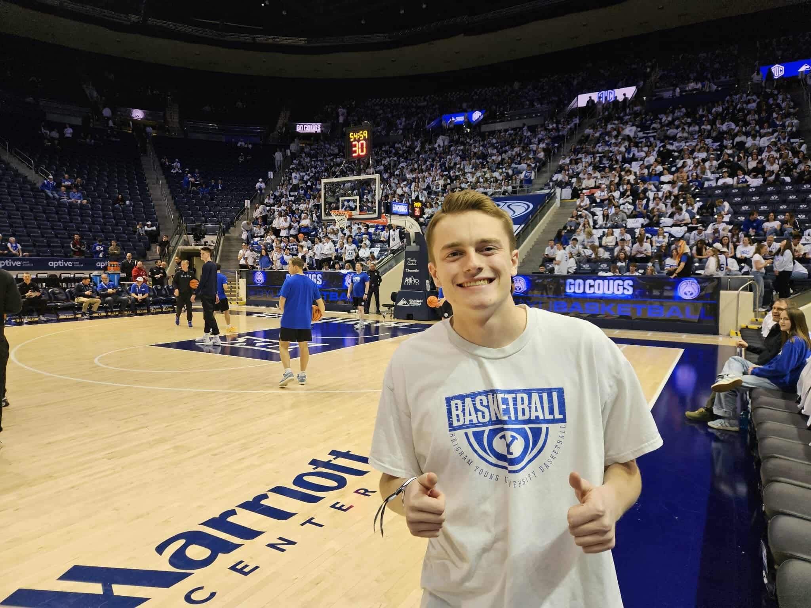

Why I Love the Game
Basketball has been a huge part of my life for as long as I can remember. There's nothing quite like the sound of a ball swishing through the net, the squeak of sneakers on hardwood, or the rush of hitting a game-winning shot. It's more than a sport — it's a way of thinking, competing, and connecting with other people.
Whether it's pickup games at the rec center or watching the Cougars play at the Marriott Center, basketball never gets old. The strategy, the athleticism, the teamwork — every game tells a different story. This page is my tribute to the sport I love.
Scroll down to check out BYU Cougar basketball, watch a highlight reel, see some stats visualized, and test your knowledge with the BYU trivia quiz.
Positions & Skills
Basketball has five positions on the court, each requiring a unique skill set.
-
Point Guard (PG) — The floor general
- Ball-handling and dribbling
- Court vision and passing
- Running pick-and-roll plays
-
Shooting Guard (SG) — The scorer
- Three-point shooting
- Off-ball movement
- Perimeter defense
-
Small Forward (SF) — The versatile wing
- Scoring from multiple spots
- Rebounding and defending multiple positions
- Transition play
-
Power Forward (PF) — The physical presence
- Post play and mid-range shooting
- Offensive and defensive rebounding
- Screening and setting picks
-
Center (C) — The anchor
- Shot-blocking and rim protection
- Finishing around the basket
- Controlling the paint on both ends
BYU Cougar Basketball
As a BYU student, the Cougars are my team. Here's what makes BYU basketball special:
THE ARENA
The Marriott Center holds nearly 19,000 fans and is one of the loudest on-campus arenas in the country. On a game night, the energy is electric.
THE LEGEND
Jimmer Fredette averaged 28.9 points per game in 2011, won the AP Player of the Year award, and became one of the most beloved players in BYU history.
THE CONFERENCE
BYU joined the Big 12 Conference in 2023, competing against some of the best programs in college basketball including Kansas, Baylor, and Texas Tech.
THE RECORD
Tyler Haws holds the BYU all-time scoring record with 2,720 career points, edging out Jimmer Fredette for the top spot in program history.
The Court

Courtside at the Marriott Center — game night at BYU.

Me at the Marriott Center — Go Cougs! 🏀
Jimmer Fredette Highlights
No BYU basketball page is complete without Jimmer. Watch some of his most iconic moments as a Cougar.
NBA Stats Visualization
The chart below shows interactive NBA data visualized with Tableau Public.

Note: Must be viewed online for the visualization to load.
🏀 Think You Know BYU Basketball?
Put your Cougar knowledge to the test with my interactive trivia quiz. 10 questions — how many can you get right?
Take the Quiz →